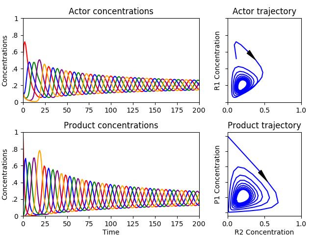
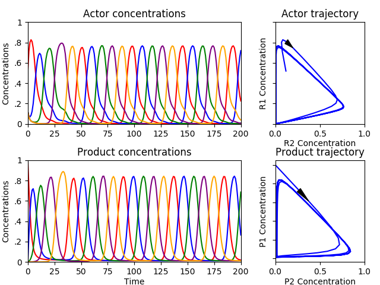
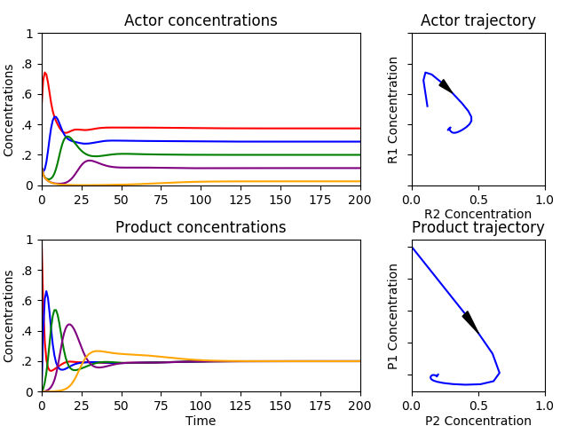
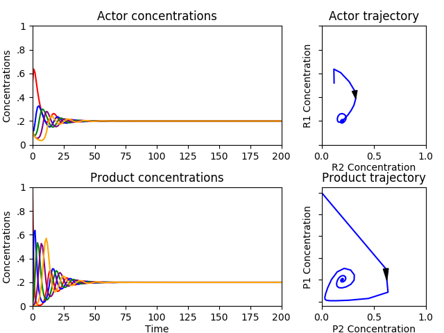
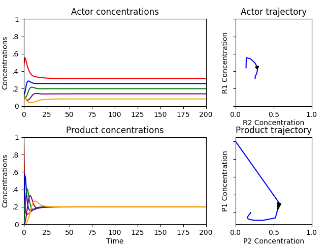
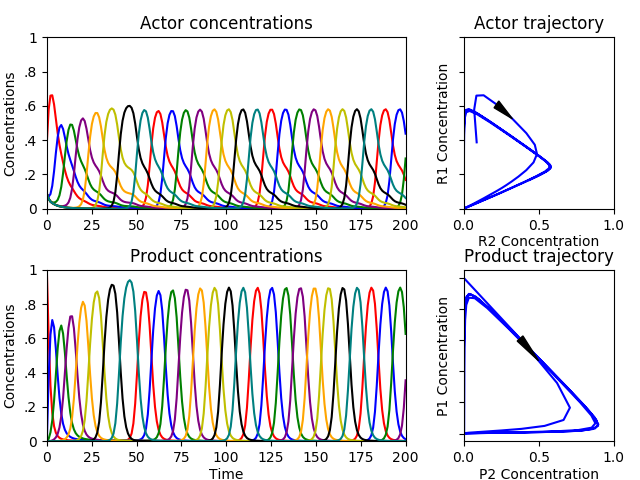
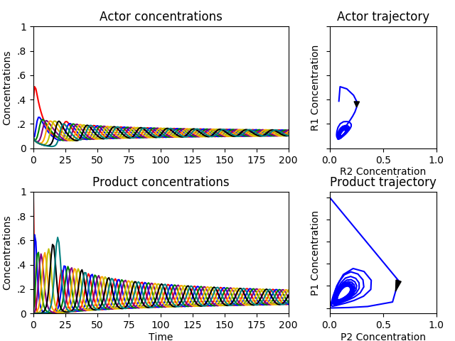
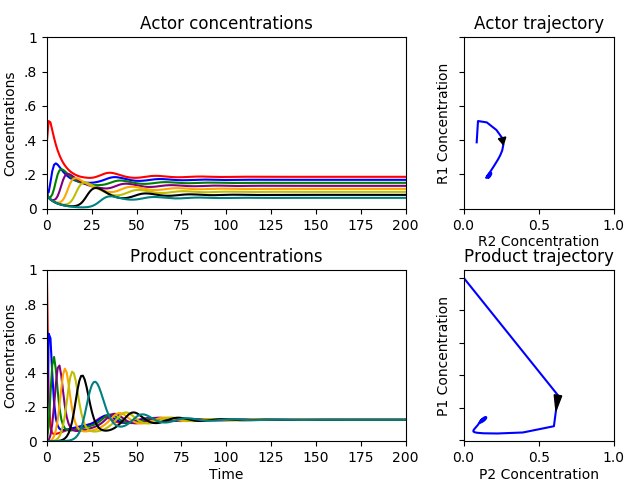

The Hypercycle and Niche Construction
Jon Atwell and John Padgett
The information crisis of pre-biotic chemistry
Macro-molecules like DNA can create macro-molecules (via translation)
But where did the first macro-molecules come from?
Eigen and Schuster (1977, 1978)
| T=0 | T=1 | T=2 | T=3 | T=4 | T=inf. | |
|---|---|---|---|---|---|---|
| TAKE | TAKE | TAKE | TOKE | MISTAKE | MISTAKE | |
| TAKE | TAKE | TAKE | TAKE | TAKE | MISTAKE | |
| TAKE | TAXE | MISTAKE | MISTAKE | MISTAKE | MISTAKE | |
| TAKE | TAKE | TAKE | TAKE | TAKE | MISTAKE | |
| ADVANTAGE | ADVANTAGE | ADVANTAGE | ADKANTAGE | MISTAKE | MISTAKE | |
| ADVANTAGE | ADVANTAGE | ADVANTAGE | ADVANTAGE | ADVANTAGE | MISTAKE | |
| ADVANTAGE | ADVANTAGE | ADVANTAGE | ADVANTAGE | ADVANTAGE | ... | MISTAKE |
| ADVANTAGE | ADVANTAGE | ADVANTAGE | ADVANTAGE | ADVANTAGE | MISTAKE | |
| OF | OR | MISTAKE | NISTAKE | MISTAKE | MISTAKE | |
| OF | OF | OF | OF | OF | MISTAKE | |
| OF | OF | OF | OF | OF | MISTAKE | |
| OF | OF | OF | OF | OF | MISTAKE | |
| MISTAKE | MISTAKE | MISTAKE | MISTAKE | MISTAKE | MISTAKE | |
| MISTAKE | MISTAKE | MISTAKE | MISTAKE | MISTAKE | MISTAKE | |
| MISTAKE | MISTAKE | MISTAKE | MISTAKE | MISTAKE | MISTAKE | |
| MISTAKE | MISTAKE | MISTAKE | MISTAKE | MISTAKE | MISTAKE |
$TAKE_{t+1} = \frac{TAKE_t}{ALL} * \frac{ADVANTAGE_t}{ALL} - \frac{TAKE_t}{ALL} * totalgrowth$
$ADVANTAGE_{t+1} = \frac{ADVANTAGE_t}{ALL} * \frac{OF_t}{ALL} - \frac{ADVANTAGE_t}{ALL} * totalgrowth$
$OF_{t+1} = \frac{OF_t}{ALL} * \frac{MISTAKE_t}{ALL} - \frac{OF_t}{ALL} * totalgrowth$
$MISTAKE_{t+1} = \frac{MISTAKE_t}{ALL} * \frac{TAKE_t}{ALL} - \frac{MISTAKE_t}{ALL} * totalgrowth$
| Step #1 | Step #2 | Step #3 |
$R_{1,k}$ |
$P_{1,k}$ |
$R_{2,k}$ |
| $Pr(Type = R_1) = \#R_1 / N$ | $Pr(Type = P_1) = \#P_1 / M$ | $Pr(Type = R_2) = \#R_2 / N$ |
$R_{i,t+1} = R_{i,t} + \overbrace{\frac{R_{i,t}}{N} * \frac{P_{i,t}}{M} * \frac{R_{i+1,t}} {N}}^\text{growth} - \overbrace{\frac{R_{i,t}}{N} \sum_{j=1}^N \frac{R_{j,t}}{N} * \frac{P_{j,t}}{M} * \frac{R_{j+1,t}}{N}}^\text{death}$
$R_{i,t+1} = R_{i,t} + \overbrace{r_i p_i r_{i+1}}^\text{growth} - \overbrace{r_i \sum_{j=1}^N r_j p_j r_{j+1}}^\text{death}$
Full dynamics (i.e. with chains)
$R_{i,t+1} = R_{i,t} + \frac{r_i*r_{i+1}}{1-\prod_{j=1}^{N} r_j} * \bigg(p_i + \displaystyle\sum_{k=1}^{N-1}\bigg[p_{i+k}\prod_{h=i+k}^{N-1+i} r_h\bigg]\bigg) - r_i*\bar{f}$
$\bar{f} = \sum r_j$
$P_{i,t} = P_{i,t} + \frac{r_{i+1}(1-r_i)}{1-\prod_{j=1}^{N} r_j}\bigg(p_{i+1} + \displaystyle\sum_{k=i}^{N-2+i}\bigg[p_k \prod_{h=k}^{N-2+i} r_h\bigg]\bigg)\\ - \frac{r_i(1-r_{i+1})}{1-\prod_{j=1}^{N}r_j}\bigg(p_i + \displaystyle\sum_{k=i+1}^{N-1+i}\bigg[p_k\prod_{h=k}^{N-1+i}r_h\bigg]\bigg)$
Leading term dynamics (i.e. no chains)
$R_{i,t+1} = R_{i,t} + r_i p_i r_{i+1} - r_i \sum_{j=1}^N r_j p_j r_{j+1}$
$P_{i,t+1} = P_{i,t} + r_{i-1} p_{i-1} + r_i p_i$
Closed Reactor
Rule = Product =
Flow Reactor
Rule = Product =
Flow Reactor
Rule = Product =
Flow Reactor
Rule = Product =
Final Difference Equations
$ R_{i,t+1} = R_{i,t} + r_{i,t} p_{i,t} r_{i+1,t} - r_{i,t}\sum_{j=1}^N r_{i,t} p_{i,t} r_{i+1,t}$
$ P_{i,t+1} = P_{i,t} + (1-F)[r_{i-1,t} p_{i-1,t} - r_{i,t} p_{i,t}] - F[p_{i,t} - p_{i,0}]$
With initial conditions
$R_{i,0} = [R_{1,0}, R_{2,0},...,R_{n,0}]$
$P_{i,0} = [\sigma * \sum_{i=1}^n R_{i,0}, 0,...,0]$
The Niche Construction Model
Laland, Odling-Smee, and Feldman (1999)
$R_t = \lambda_1 R_{t-1} (1 - \gamma p) + \lambda_2 p + \lambda_3$
$0 \leq \gamma, \lambda_1, \lambda_2, \lambda_3 \leq 1$
$0 < \lambda_1 + \lambda_2 + \lambda_3 < 1$
Conditions for Stability Analysis
$r_{i,0} = [Total-(N-1)*50,50,...,50]$
$p_{i,0} = [\sigma * Total, 0, ..., 0]$
$\text{Boundary } \delta = .001$
$N=5, \sigma=1, F=0$
$N=5, \sigma=1, F=0.5$
$N=5, \sigma=1, F=0.08$
$N=5, \sigma=2, F=0$
$N=5, \sigma=.5, F=0$
$N=5, \sigma=3, F=0.15$
$N=8, \sigma=1, F=0$
$N=8, \sigma=3, F=0$
$N=8, \sigma=3, F=0.05$
